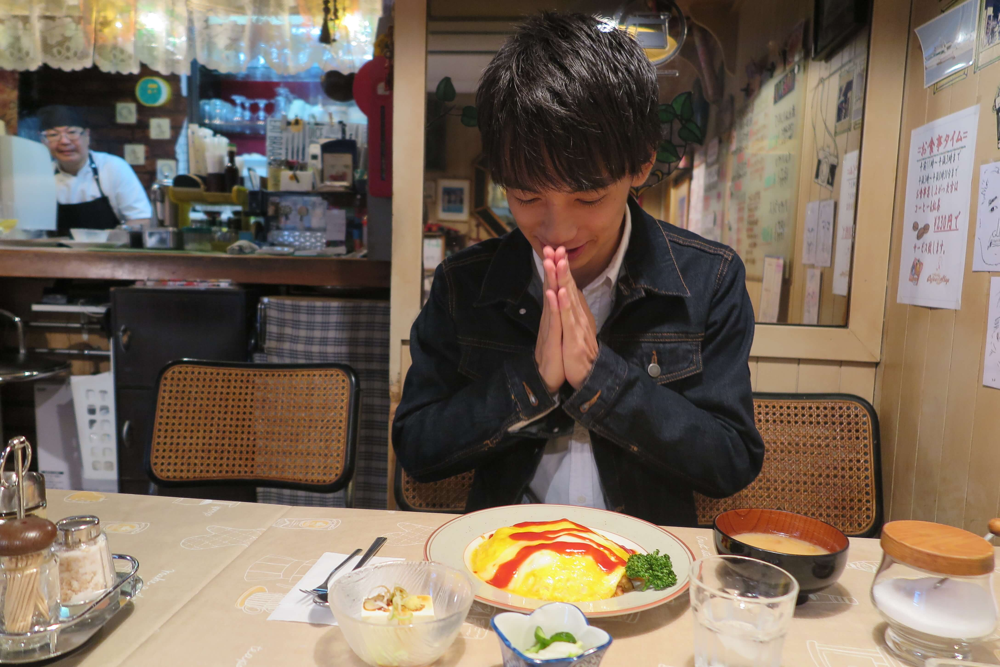
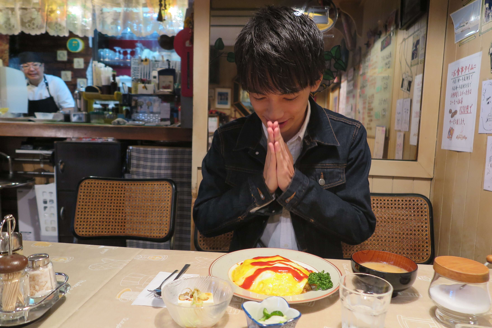
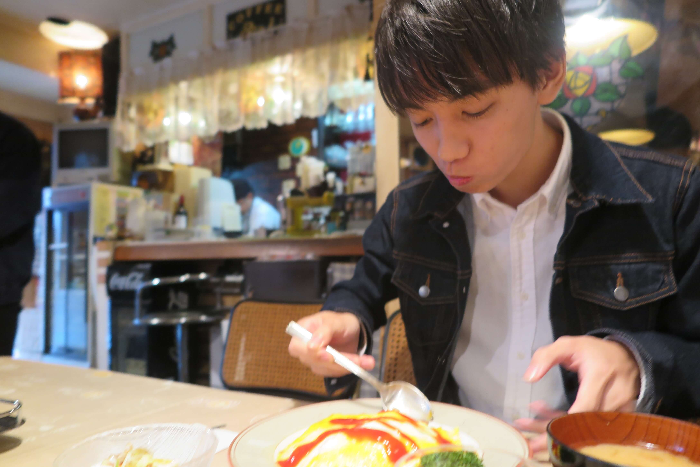
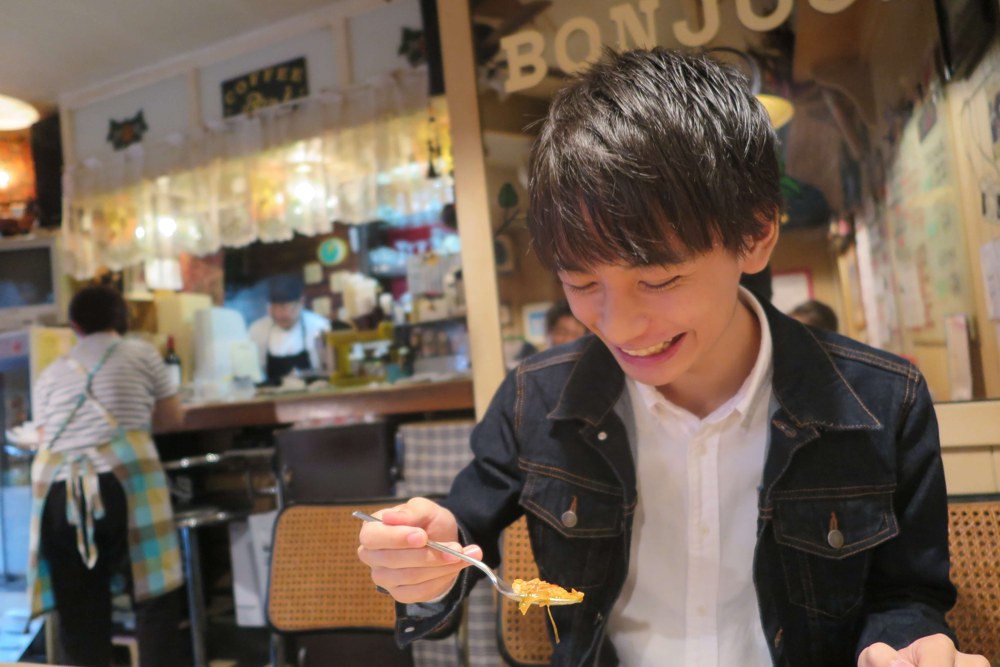
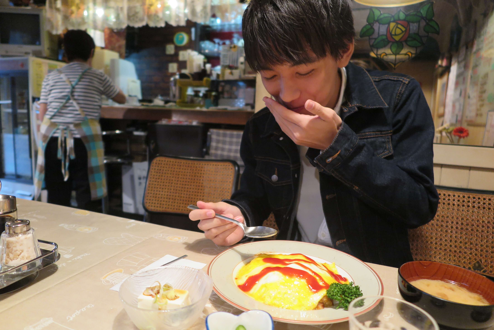

今回の主役は理科大ミスターコンNo.2吉田紘城さん

やや緊張気味な表情
この日吉田君が注文したのはオムライス
 

いただきます(‘ω’)ノ
. いち，
にの，
さん！
ボンジュールの奥さん，吉田君見るたびに，「かわいいねぇ～」の声が止まりません（笑）
そんなやり取りもあってインタビュアー高橋の緊張もほぐれたところでスタート！
＜高橋＞さあ始めましょう．
（指示入る：もうちょっと近い方がいいのでは？）
＜高橋＞いやぁ，これぐらいの方が．近いと余計緊張しちゃいますって（笑）
＜吉田くん＞ははは（笑）
＜高橋＞じゃあ恒例の呼び名決めから行きましょう！普段なんて呼ばれてるんですか？
＜吉田くん＞んー，大学では男からはひろき，女の子からは吉田君って呼ばれてます
＜高橋＞吉田君．．．やっぱ高嶺の花なのかなぁ
＜吉田くん＞普段女子と会話しないからいきなり下の名前で呼びづらいのかなぁ
＜高橋＞高校の頃のあだ名が「ドビー」だったって聞いたんですけどなんでですか？
＜吉田くん＞高校の時，サッカー部の罰則で坊主に3回ぐらいなったんですよ．
＜高橋＞結構多いっすね（笑）
＜吉田くん＞それで坊主の次の日にドビーに似てね？ってクラスメイトに言われたのが始まりです．
体調不良の高橋，話の展開の助けを取材班に求める．「パスください．．．」
＜高橋＞あ，そうだ，彼女にはなんて呼ばれたいですか？？
＜吉田くん＞んー，彼女には下の名前で呼ばれたいぁ～．「ひろき」って．
＜高橋＞「ひろくん」とかではなく？（笑）
＜吉田くん＞お互い下の名前で呼び合うのがいいっす（笑）
銭湯好き？？

＜高橋＞銭湯お好きだって聞いたんですけど？
＜吉田くん＞結構行きますね！家の近くの銭湯はよく行きますし，時間があるときは遠くまで行ったりします．
＜高橋＞何人ぐらいで行くんですか？
＜吉田くん＞んー，一人で行くか少人数で行くかですね．4人とかだと待たせちゃうことが時がありますからね～．長風呂しても大丈夫な友達と行く感じですね．
＜高橋＞ちなみに銭湯上がったら何飲みますか？
＜吉田くん＞いや，僕はダントツでコーヒー牛乳！
＜高橋＞王道ですね～，僕もです．
銭湯サークル所属の我らが代表斎藤がここで物申す．

＜斎藤＞邪道言ってもいいですか？
＜吉田くん＞ぜひぜひ（笑）
＜斎藤＞ポカリ飲んでからの牛乳です！
＜吉田くん＞いやいやいやいや，それは違うでしょ（笑）
＜高橋＞ホントに銭湯サークルなんですか？？
＜吉田くん＞んー，¥30ぐらい高くてもコーヒー牛乳買っちゃいますよね（笑）
＜高橋＞銭湯上がった後の黄金ルートみたいなのありますか？
＜吉田くん＞んー，なんだろうなぁ，，，
＜高橋＞はい，銭湯上がります，
＜吉田くん＞あ，シミュレーションしてくんですね（笑）
＜高橋＞パンツ履きます，
＜吉田くん＞いやそっからですか！（笑）
＜高橋＞コーヒー牛乳飲みます，
＜吉田くん＞あ，たまにその後マッサージチェア座りますね
＜高橋＞さて座って汗も引いてきました，
＜吉田くん＞んー，その後は食べるか帰るかですね
＜高橋＞なるほど，特に変わったことはしないんですね．
結婚しても奥さんと銭湯行きたいですか？
＜吉田くん＞えー（笑）んー，銭湯好きな子だったらいいですけど，あんまりあれかな．
一人で行きたいですね．自分一人の時間って感じなので．
理想のデートは和食デート？
＜高橋＞理想のデート？
＜吉田くん＞理想のデート？
＜高橋＞なんかこう，アメリカで彼女と大きなハンバーガー半分こしたいなみたいな感じの食べ物にからめてお願いします（笑）
＜吉田くん＞んー，
大人になったらちょっと高い，例えば銀座とかの和食屋さんに行きたい
＜高橋＞おー，和食派ですか
＜吉田くん＞洋食もいいんですけどデートだったら和食がいいです．
ちょっと大人っぽいデートがしてみたい．
＜高橋＞いいですねぇ．ちなみに最近ちょっと背伸びして贅沢した話とかないですか？
＜吉田くん＞あー，恵比寿に白いカレーうどん食べに行きました．
＜高橋＞あ，聞いたことありますそれ．あれってどうなってるんですか？
＜吉田くん＞普通のカレーうどんにジャガイモのムースが入ってるんですよ．
＜高橋＞なるほど！ほんとにカレーまで白いのかと思ってました．
ここで再び話の展開に困った高橋，持参のネタ帳を開く．．．
＜高橋＞そういえば吉田さん食べ物系のツイート多いですよね？
＜吉田くん＞バイト先の先輩が食べ物好きなんで影響されちゃいました．池袋のとんかつ屋さんでバイトしてるので結構池袋とか，恵比寿，飯田橋でご飯連れて行ってもらうんです．
＜奥さん＞ はい，ホットコーヒーです
＜高橋＞連れて行ってもらうタイプですか？
＜吉田くん＞んー，まずは連れて行ってもらっておいしいのがあったらそこから友達に広げていく感じですかね．
＜高橋＞あ，いいですねそれ．そこで大人な店知ってたらかっこいいですよね．
俺そういうのが目的で食文化研究会入ったんだよな（笑）

鉄板の質問だけど，，「好きな女性のタイプは？？」
＜高橋＞じゃあ食べ物以外でいうと．好きな女性のタイプは？
＜吉田くん＞んー，ショートカットですかね
＜高橋＞芸能人でいうと？
＜吉田くん＞波瑠さんとか．
＜高橋＞目がおっきくて切れ長な感じ？
＜吉田くん＞あ，そうそう，それで片耳に髪かけてたりすると
グッと来ます．
＜高橋＞ちょっと大人で，目がおっきくて片耳に髪かけてる彼女と銀座で大人な和食デート？
＜吉田くん＞いいですねぇ（笑）
そろそろ二十歳の誕生日！
＜高橋＞そろそろ誕生日ですよね？二十歳になったらやってみたいことって？
＜吉田くん＞プチ一人旅とかやってみたいですね！
東北とか．電車で．
＜高橋＞青春18とか？
＜吉田くん＞あー．いいですね！
この前月9で尾道で海岸線を自転車で走ってるの見ててあこがれちゃいました．
＜高橋＞じゃあ彼女とぜひ（笑）
＜吉田くん＞いいですねぇ（笑）
＜高橋＞ちなみに海外行かれたことはあるんですか？
＜吉田くん＞ハワイしかないですね．でも海外行ったら現地料理食べたい．あとそれからサッカー好きなんでサッカーの試合見たい．
＜高橋＞あ，そうだ全然話変わるんですけどサークルは何かやってるんですか？
＜吉田くん＞今はやってないですね～
＜高橋＞ぜひ金町食文化研究会へ．我々ビジュアル面が弱いので（笑）
金町ごはん
＜高橋＞金町でご飯は食べますか？
＜吉田くん＞んー，あんまり食べないですね金町では
＜高橋＞ぜひぜひ金町でも．
＜吉田くん＞おいしいお店教えてください
＜高橋＞ボンジュールおいしいです！！！
注）ここでボンジュールのご主人と奥さんが満面の笑みで拍手喝采
ミスターコンに参加してみて．．．
＜高橋＞ミスターコン始めて変わったなと思うこと教えてください
＜吉田くん＞人付き合いの範囲が広がりましたね，
それこそ高校時代あんまり仲良くなかった友達が連絡くれたり，他のキャンパスの人と遊びに行ったり．
あと見た目に気を遣うようになりましたね（笑）
一年生の頃は短パンにTシャツ，サンダルみたいな感じで通学していて，友達にも笑われていたんですけど．
＜高橋＞靴が好きだって伺ってたんですけど，そこからファッションにつなげていくみたいのはなかったんですか？

＜吉田くん＞んー，お金なかったからあんまりいい靴見つけても買おう！ってならなかったですね．
＜高橋＞ちなみにミスターコンはなんで出場しようと思ったんですか？
＜吉田くん＞学科の同期の友達に連絡先教えてって言われて勝手に応募されてました（笑）
＜高橋＞え？？？？？
立候補したんじゃなかったんですか？？
＜吉田くん＞金町にミスターコンのスカウトが来ていたらしくて，その時にその友達が話してたみたいで．．．．
＜高橋＞陰謀に巻き込まれたと（笑）後悔はないですか？
＜吉田くん＞んー，あるっちゃあるけど．．．．
＜高橋＞あるんかい！！
これ書きますね（笑）